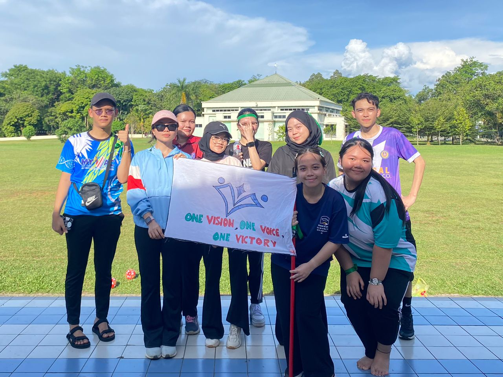
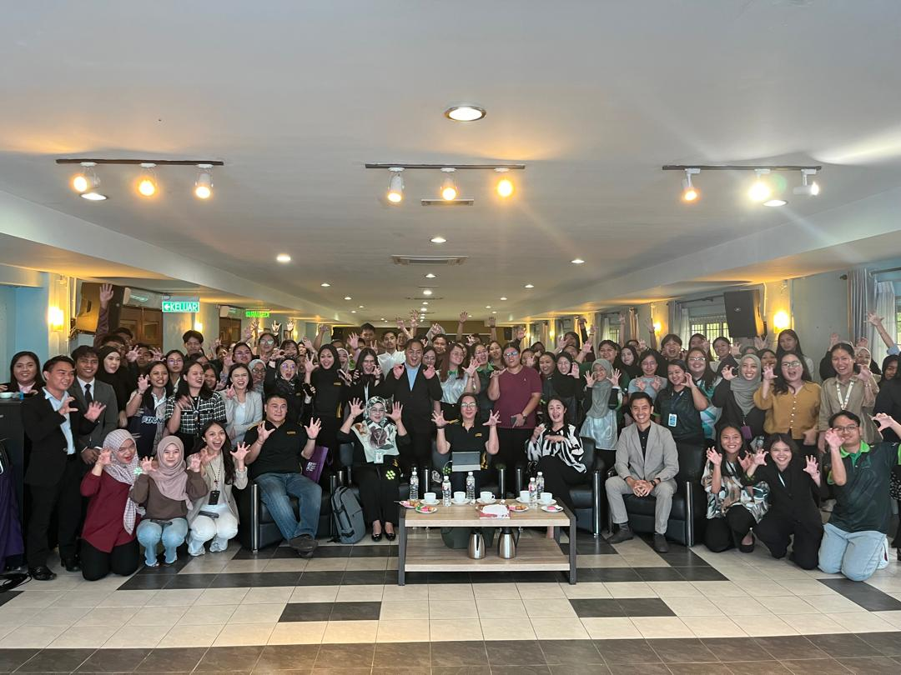

My Actvities

SEMESTER GENERAL MEETING
Is a knowledge and experience sharing platform for old and new students. Introducing new students to the BAFIN Association.

TEAM BUILDING
To strengthen friendships among students. Empowering leadership in students as well as improving communication skills among students in performing group assignments.

FINANCIAL LITERACY
Increased Awareness of participants about the importance of proper financial management. Provides basic knowledge about financial management such as spending planning, savings, and investments.